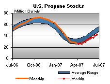

Released on June 27, 2007
(Next Release on July 5, 2007)
Magic?
From Houdini to David Copperfield to David Blaine, magicians have always fascinated the public by making the seemingly impossible appear before our eyes. Whether it is making things disappear or floating in the air, magicians test the limits of what we think we understand. In U.S. oil markets, some analysts are wondering if magic might be the explanation for the near-record production of gasoline, even as refinery utilization dropped to the lowest percentage since at least 1991 for this time of year during the week ending June 15. Then, even as refinery utilization increased nearly 2 percentage points for the week ending June 22, gasoline production remained relatively flat compared to the earlier week. Unlike magic, however, no tricks are required to understand how gasoline production can appear disconnected from crude oil refinery throughputs.
As the graph below illustrates, there are ways to increase U.S. finished motor gasoline supplies other than the processing of crude oil through U.S. refineries, and with current prices, there is certainly economic incentive to produce significant volumes of gasoline. First, consider gasoline production from U.S. refineries. Even if crude oil inputs stay flat, the yield of gasoline from a barrel of crude oil can be changed slightly as the result of operational changes or changes in the type of crude oil used in refineries. But recently, concerns have focused on crude throughput declines as a result of crude oil distillation towers being under repair or maintenance. In these cases, refiners can produce more gasoline by increasing their use of unfinished oils to use as feedstocks to units downstream of the crude tower, such as the fluid catalytic cracking unit or the coking unit. These unfinished oils may come from other U.S. refiners or from imports. One indicator that this may be occurring is that inventories of unfinished oils have dropped 6.4 million barrels in the six weeks between May 11 and June 22, a rate of about 150,000 barrels per day.

Second, consider blending activity at terminals that results in finished gasoline production. Blenders combine materials such as alkylate, RBOB, ethanol and other gasoline blending components into finished gasoline, which is included in U.S. gasoline production. Net inputs of blending components to refineries and blenders have averaged nearly 500,000 barrels per day over the last 8 weeks, significantly higher than the same period last year. While some of the gasoline blending components come from U.S. refineries, much of the blending component volumes come from foreign refineries as imports.
Some analysts have speculated that once refinery utilization did increase back to more typical percentages for this time of year, we would see a substantial increase in the already high gasoline production volumes. Yet, data for the week ending June 22, which showed crude oil inputs to refineries increasing by over 400,000 barrels per day, show hardly any increase in total gasoline production. It is certainly plausible that as refineries return to operation after maintenance, that gasoline production from unfinished oils may decline. Regardless of how gasoline is produced, the gasoline market remains tight with inventories remaining below the average range. Because of this, many analysts will continue to focus on gasoline production volumes the rest of this summer.
Gasoline Prices Lower, Diesel Gains 3 Cents
For the fifth straight week, the U.S. average retail price for regular gasoline was lower, declining 2.7 cents to 298.2 cents per gallon as of June 25, 2007. Prices are 11.3 cents per gallon higher than this time last year. All regions reported price decreases. East Coast prices dropped 3.0 cents to 294.6 cents per gallon. In the Midwest, prices fell 1.7 cents to 296.7 cents per gallon, while prices for the Gulf Coast decreased 2.3 cents to 288.0 cents per gallon. Rocky Mountain prices fell 4.3 cents to 313.8 cents per gallon but remain 30.7 cents per gallon above last year's price. West Coast prices were also down 4.3 cents to 314.5 cents per gallon. The average price for regular grade in California was down 4.4 cents to 319.2 cents per gallon.
Retail diesel prices rose this week, climbing 3.0 cents to 283.5 cents per gallon. Prices are 3.2 cents per gallon lower than at this time last year. All regions reported price increases. East Coast prices were up 3.2 cents to 283.2 cents per gallon. In the Midwest, prices increased 3.2 cents to 280.6 cents per gallon, while the Gulf Coast saw a rise of 2.7 cents to 278.0 cents per gallon. The Rocky Mountain region climbed 2.9 cents to 293.6 cents per gallon. The West Coast price rose 2.7 cents to 298.5 cents per gallon. California prices grew 4.0 cents to 307.3 cents per gallon, but remain 6.7 cents per gallon lower than at this time last year.
Propane Inventories Push Higher
Propane inventories were pushed higher by a weekly build of 2.3 million barrels last week that put the nation’s primary supply of propane at an estimated 42.0 million barrels as of June 22, 2007. Although inventory gains have shown some strength in recent weeks, total propane inventories continue to track slightly below the lower boundary of the average range for this time of year. Regional gains were higher in all areas with the Midwest reporting the largest, measuring 1.2 million barrels. Elsewhere, Gulf Coast inventories rose by 0.8 million barrels last week, while inventories in the East Coast reported a gain of 0.2 million barrels. The combined Rocky Mountain/West Coast region remained relatively unchanged last week. Propylene non-fuel use inventories slipped lower by 0.1 million barrels and accounted for a smaller 6.2 percent share of total propane/propylene inventories, down from 6.7 percent from the prior week.
Text from the previous editions of “This Week In Petroleum” is now accessible through a link at the top right-hand corner of this page.
| Retail Prices (Cents Per Gallon) | |||||||
| Retail Data | Changes From | Retail Data | Changes From | ||||
| 06/25/07 | Week | Year | 06/25/07 | Week | Year | ||
| Gasoline | 298.2 | Diesel Fuel | 283.5 | ||||
| Spot Prices (Cents Per Gallon) | |||||||||||||||||||||||||||||||||||||||
 |
|||||||||||||||||||||||||||||||||||||||
|
|||||||||||||||||||||||||||||||||||||||
| Stocks (Million Barrels) | |||||||
 |
|||||||
|  | |||||||
| Stocks Data | Changes From | Stocks Data | Changes From | ||||
| 06/22/07 | Week | Year | 06/22/07 | Week | Year | ||
| Crude Oil | 350.9 | Distillate | 120.4 | ||||
| Gasoline | 202.6 | Propane | 41.954 | ||||